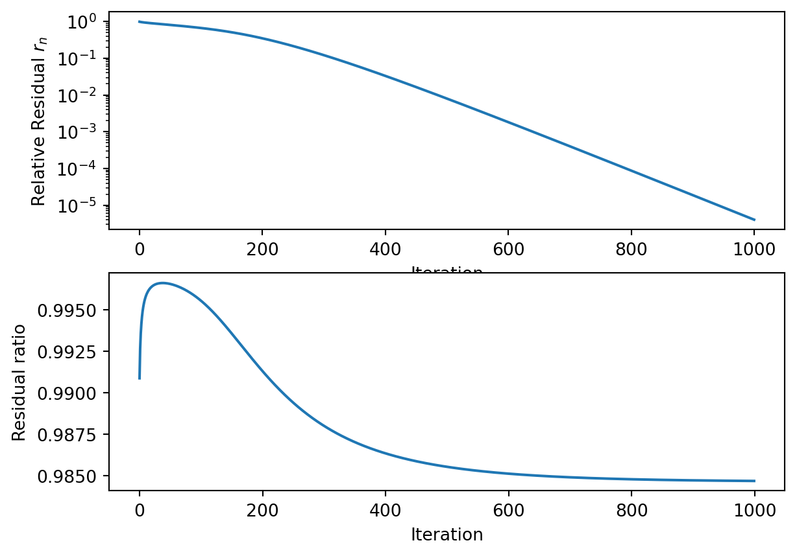

3 Explicit Runge-Kutta Method
3.1 A small introduction to explicit Runge-Kutta methods
This section aims to introduce explicit Runge-Kutta methods, [1, Ch. 3], which we use in this paper. We consider solving a generic initial value problem of the form
\[ y'(t) = f(t,y(t)), \quad y(0) = y_0. \]
If we know, for an instant \(t_n\), the value for \(y(t_n)\), we can compute the value of \(y\) at instant \(t_{n+1} = t_n +\Delta t\) by integrating
\[ y(t_{n+1}) = y(t_n) + \int_{t_n}^{t_{n+1}}f(u,y(u))\; du, \]
and with the change of variable \(u = t_n + \Delta t\tau\), we have
\[ y(t_{n+1}) = y(t_n) + \Delta t\int_0^1f(t_n+\Delta t\tau,y(t_n+\Delta t\tau)) \; d\tau. \] The problem is finding a suitable way to compute the integral above. An elementary approach is to use the current value of \(f(t_n,y(t_n))\) and to treat \(f\) as constant, thus defining the sequence
\[ y_{n+1} = y_n + \Delta tf(t_n,y_n), \]
where \(y_{n} \approx y(t_{n})\), \(y_0 = y(0)\). This is the explicit Euler’s method. We now want to exploit quadrature formulas for numerical integration. Let \(c_j \in [0,1], j=1,2,\dots, \nu\), where \(\nu\) is an integer, be the nodes in the quadrature formula, with their associated weight \(b_j, j=1,2,\dots, \nu\). A quadrature formula for the integral is then of the form
\[ \int_0^1 f(t_n+\Delta t \tau,y(t_n+\Delta t\tau))\; d\tau \approx \sum_{j=1}^\nu b_j f(t_n + \Delta t c_j,y(t_n+\Delta t c_j)). \]
This is all well and good, except that we have to know the values \(y(t_n+\Delta c_j)\), which we do not possess. We can however, play pretend and compute an approximation of these values \(\xi_j \approx y(t_n+\Delta t c_j), j=1,\dots, \nu\). The \(\xi_j\) are called stage values. [2]. The main idea to use the \(\xi_i\)’s to compute \(\xi_j\), using a linear combination of the terms \(f(t_n + \Delta t c_j, \xi_i)\). That is
\[ \xi_i = y_n + \Delta t \sum_{j=1}^\nu a_{ij}f(t_n+\Delta t c_j, \xi_j), \]
for \(i = 1,\dots, \nu\), where the \(a_{ij}\) are some well chosen values, which is not in scope of this thesis. To simplify notation, we note \(A\) as the square array containing the \(a_{ij}\) parameters, that is \(A_{ij} = a_{ij}\), \(c = (c_1,\dots,c_\nu)^\intercal\) the vector of nodes, and \(b = (b_1,\dots, b_\nu)^\intercal\) the vector of weights. An RK method is then written in the form of the following array, also called a Butcher tableau:
\[ \renewcommand\arraystretch{1.2} \begin{array} {c|c} c & A\\ \hline & b^\intercal \end{array}. \]
We remark that if, for any \(j\geq i\), \(a_{ij} \neq 0\), then we will need to know \(\xi_j\) to compute \(\xi_i\), which involves solving an equation, making the method implicit. We consider here explicit methods, where we can compute \(\xi_{i+1}\) if we know \(\xi_j, j = 1 , \dots , i-1\). Since we know \(f(t_n,y_n)\), we choose \(a_{11} = 0\) and \(c_1 = 0\). An explicit RK method is then of the form
\[ y_{n+1} = y_n + h\sum_{j=1}^\nu b_j f(t_n+\Delta t c_j,\xi_j), \]
where the stage values \(\xi_j\) are computed sequentially as follow
\[\begin{align*} \xi_1 &= y_n,\\ \xi_2 &= y_n + \Delta t a_{2,1}f(t_n,\xi_1),\\ \xi_3 &= y_n + \Delta t a_{3,1}f(t_n,\xi_1) + \Delta t a_{3,2}f(t_n+\Delta t c_2,\xi_2),\\ \vdots\\ \xi_\nu &= y_n + \Delta t \sum_{j=1}^{\nu-1} a_{\nu,j}f(t_n + \Delta t c_j,\xi_j). \end{align*}\]
3.2 Application to the test problem
We now have to solve the ODE \(u'(t) = e - Mu(t)\) where \(M\) depends on the problem parameters \(b\) and \(\Delta x = 1 / (n+1)\), and \(n\) is the chosen number of subdivisions of \([0,1]\). We consider in this thesis the following RK method with two stages [2];
\[ \begin{array} {c|cc} 0 & &\\ \alpha & \alpha & \\ \hline & 0 & 1 \end{array}. \]
Remark. This RK method can be extended to more stages. We only need the last stage value to compute the time step update, and we only need to compute the stage values sequentially using only the last stage value calculated. This makes it possible, when programming the method, to simply to do the update of the variable \(\xi\) in place inside the computer memory. Such methods are thus memory efficient.
This solver has two parameters, namely the (pseudo) time step \(\Delta t\) and \(\alpha\), where \(\alpha \in [0,1]\).
The goal is for the solver to converge to a steady state solution in as few iterations as possible.
3.2.1 A note on stability
Using the same notation as before for the stage values and the studied RK method, for the equation \(u'(t) = f(t,u(t))\), we have \(\xi_1 = u_n\),
\[ \xi_2 = u_n + \Delta t \alpha f(t_n,\xi_1) = u_n + \Delta t \alpha f(t_n,u_n). \]
The update is thus;
\[ u_{n+1} = u_n + \Delta t f(t_n+\alpha \Delta t, \xi_2). \]
In the test problem case, \(f(t_n,\mathbfit{u}_n) = \mathbfit{e} - \mathbfit{Mu}_n\), and we get the update
\[ \mathbfit{u}_{n+1} = \mathbfit{u}_n + \Delta t\left[\mathbfit{e}-\mathbfit{M}(\mathbfit{u}_n+\alpha\Delta t(\mathbfit{e}-\mathbfit{Mu_n}))\right]. \]
After a few lines of computation, we get the following iteration,
\[ \mathbfit{u}_{n+1} = \left[\mathbfit{I}- \Delta t(\mathbfit{I}- \alpha \Delta t \mathbfit{M})\mathbfit{M}\right]\mathbfit{u}_n + \left[\Delta t(\mathbfit{I} - \alpha \Delta t \mathbfit{M})\right]\mathbfit{e}. \tag{3.1}\]
This iteration is of the form \(\mathbfit{u}_{n+1} =\mathbfit{Ku}_n + \mathbfit{Le}\), where
\[ \mathbfit{L} = \Delta t\left[ \mathbfit{I} - \alpha \Delta t \mathbfit{M}\right] \tag{3.2}\] and \[ \mathbfit{K} = \mathbfit{I}- \mathbfit{LM} = \left[\mathbfit{I}- \Delta t(\mathbfit{I}- \alpha \Delta t \mathbfit{M})\mathbfit{M}\right]. \tag{3.3}\]
We recognize this iteration as a linear stationary iteration, which converges to a unique fixed point for any starting value \(\mathbfit{u}_0\) if and only if \(\rho(K)<1\), [3, Ch. 2.2], where \(\rho(\mathbfit{K})\) is the spectral radius of \(\mathbfit{K}\). Furthermore, this iteration satisfies the consistency requirement \(\mathbfit{K} = \mathbfit{I}-\mathbfit{LM}\), so the fixed point, when it exists, is \(\mathbfit{u}^* = \mathbfit{M}^{-1}\mathbfit{e}\).
Remark. One may remark that \(\mathbfit{K} = p(\Delta t \mathbfit{M})\) with \(p(z) = 1- z + \alpha z^2\) a polynomial. This polynomial is also the stability polynomial of the RK method [2].
3.2.2 Residual ratios
We have shown in the last section the sufficient and necessary condition for the solver to converge to the desired solution \(\mathbfit{u}^* = \mathbfit{M}^{-1}\mathbfit{e}\). This condition is that \(\rho(\mathbfit{K})<1\). The spectral radius can be computed with power iterations [4, Pt. V], but this is an expensive task that we may not be able to do in practice. Furthermore, the derivation of \(\mathbfit{K}\) is specific to this method, and may not be as accessible with other methods. We instead turn our attention to another method.
We set \(\mathbfit{u}_0 = \mathbfit{e}\) as an initial value. We define the relative residual after \(k\) steps as
\[ r_k = \frac{||\mathbfit{M}\mathbfit{u}_k - \mathbfit{e}||}{||\mathbfit{e}||}, \tag{3.4}\]
where \(||.||\) is the 2-norm.
If the solver we chose is stable, then \(||r_k|| \to 0\) as \(k \to \infty\). We define now the residual ratio at step \(k\) to be the ratio of the residuals at step \(k\) and \(k-1\). That is
\[ \rho_k = \frac{r_k}{r_{k-1}} = \frac{||\mathbfit{Mu}_k - \mathbfit{e}||}{||\mathbfit{Mu}_{k-1}-\mathbfit{e}||}. \tag{3.5}\]
Note that the residual ratio depends on both the problem parameters and the solver parameters. It will be useful in future sections to make that relation evident by using the notation \(\rho_{k,b,n}(\alpha, \Delta t)\). Figure 3.1 shows the evolution of the relative residual, as well as the residual ratio for specific parameters. After a certain number of iterations, the residual ratio stabilizes. This can be however be after a large amount of iterations, so the rate of convergence can be costly to compute.
3.3 A small experiment
We are interested in finding the best parameters \((\Delta t, \alpha)\) to use for some specific problem parameters \((b,n)\). Ideally, we should minimize the asymptotic residual ratio \(\rho_\infty\), but this is computationally intensive, so we restrict ourselves to minimizing the residual ratio \(\rho_k\) after a fixed amount of iterations.
As we’ve seen in Figure 3.1, \(\rho_k\) can vary quite a bit depending on \(k\), so we decide to investigate the residual ratio after 10 iterations and 100 iterations. We set the problem parameters \(b = 0.05\), and \(n = 100\), and we plot \(\rho_{k,0.05,100}(\Delta t, \alpha)\) for different values of \(k\). This is achieved by making a linear grid for parameters \(\Delta t\) and \(\alpha\) of size \(100\times 100\), where \(\alpha\) varies between \(0\) and \(1\), and \(\Delta t\) varies between \(0\) and \(5\), then computing the residual ratios on that grid.
We wish to find the optimal parameters for this specific problem, that is, the ones that minimize \(\rho_{k}\), for different values of \(k\). We are also interested in seeing how much the optimal parameters depend on \(k\).
After 100 iterations, we see that we need to choose the parameters in more narrow region than after 10 iterations to get \(\rho_{100}<1\), suggesting that convergence of the solver may not hold even if it seems to hold for the first few iterations. However, this doesn’t seem to be the case when we consider higher values of \(k\). Nevertheless, we can see how the solver parameters interact with the residual ratio.
By doing this experiment, we motivate the following method: using a grid search, look for the solver parameters that minimize \(\rho_k\), where \(k\) has to be chosen as low as possible to minimize computing time, but also high enough to ensure that the solver won’t diverge after more iterations. This method however need to be repeated for each individual problem parameters. We therefore explore a possible solution to this problem by using a reinforcement learning algorithm to “learn” the optimal solver parameters \(\alpha\) and \(\Delta t\), as a function of the problem parameters \(b\) and \(n\).